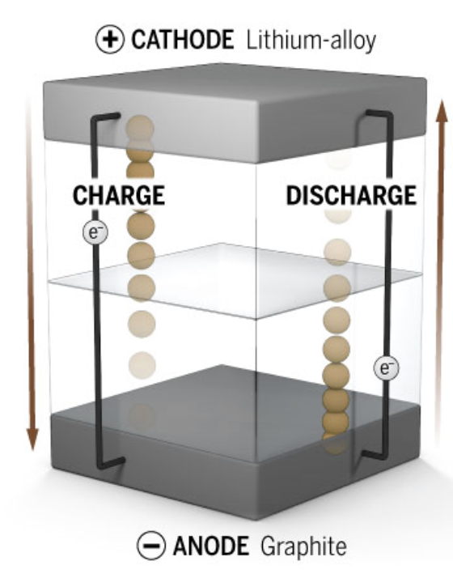
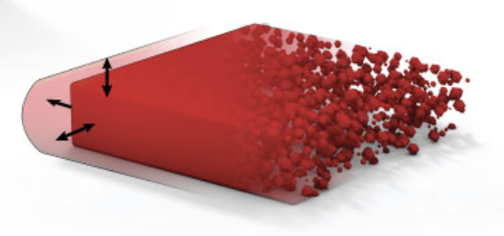
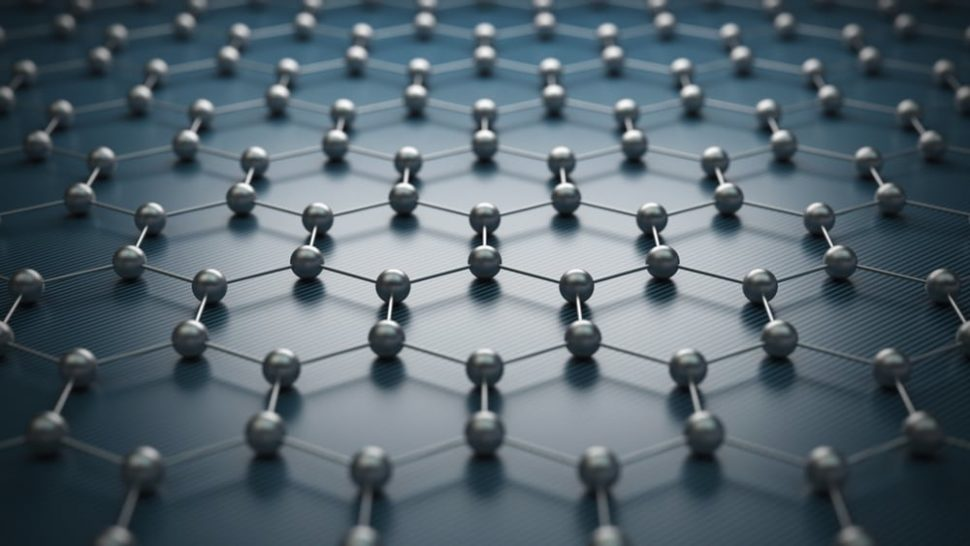
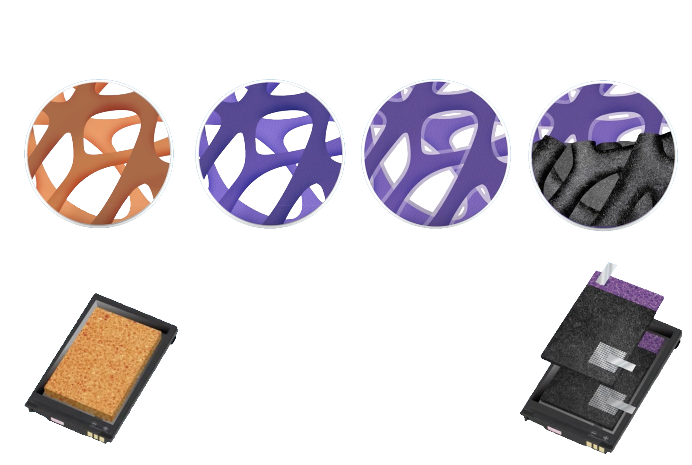
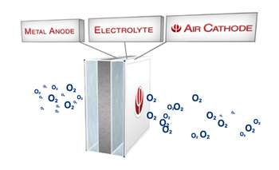
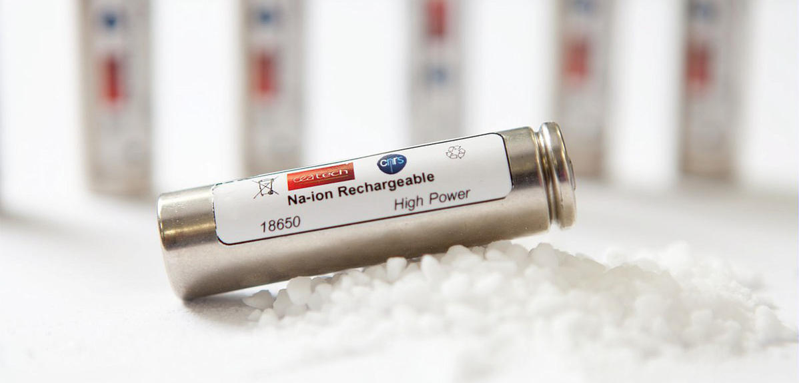

Right now the Earth is filled with energy, and we're doing our best to capture and use it. While we've gotten better at moving towards renewable energies, we still suck at storing that energy.
Right now, the highest standard of battery tech is Lithium-ion batteries. They seem to have the best energy density, high efficiencies (around 99%), and they last pretty long.
So what's the problem? With the increasing amount of renewable energies we're capturing, the energy density of lithium-ion batteries just isn't good enough anymore.
It may not seem like a deal since we can just keep mass-producing the batteries, but the problem is that lithium is a relatively rare metal, and as a result, it's not cheap. While the cost to produce batteries is decreasing, the demand for energy storage is rapidly increasing.
We've reached a point where creating a battery to replace lithium-ion can have a huge impact on the energy industry.
The fact that fossil fuels have a much higher energy density is a huge factor in the struggle to move over to completely relying on renewable energies. We need batteries that put out more energy relative to their weight.
How Lithium-ion Batteries Work
Lithium batteries work similarly to regular AA or AAA chemical batteries. They have anode and cathode terminals with an electrolyte between them. Unlike in normal batteries, the reaction that discharges electricity in lithium-ion batteries is reversible making the battery rechargeable.

The cathodes (+ terminals) are made from LiFePO4, and the anodes (- terminals) are made from graphite, which is just made of carbon. Electricity is just the flow of electrons. These batteries cause a flow of electrons by moving lithium ions between the anode and the cathode.
When charging, the ions move to the anode, and they move to the cathode when discharging power.
This ion movement causes the electrons to move through the circuit, so the lithium-ion movement and electron movements are linked.
Silicon Anode Batteries
A lot of major automotive companies like BMW have been pouring money into developing silicon anode batteries. These batteries use lithium anodes like the regular lithium-ion batteries, but instead of using carbon-based anode, they use silicon.
The reason silicon does a way better job than graphite as an anode is because it takes 4 carbon atoms to hold lithium, while 1 silicon can hold 4 lithiums. That's a significant upgrade … one that causes silicon to perform 3x better than graphite.

Still using lithium is a double edges sword. It's still an expensive material, but its also easy for companies to move over to silicon batteries in their production facilities since they're already set up to work with lithium. They would have to completely redesign their factories if the batteries were completely different making the switch slightly less appealing.
The silicon anodes are made by processing sand to produce pure silicon, but the biggest issue that researchers are facing right now is that the silicon anodes expand when they're being used. This causes them to degrade too quickly. The anodes are also pretty hard to mass-produce.

Graphene Batteries
Graphene is a thin carbon sheet, that is made out of the same material as your pencils, but its expensive to get it down to the thin sheet. Its been applauded for its great performance in a lot of use cases - one of them being batteries.

There are companies working on graphene batteries that can fully charge in minutes and discharge electricity 33x faster than lithium-ion batteries. This is super valuable for electric vehicles.
Foam Batteries
Right now, traditional batteries are 2-dimensional. They have layers that are either stacked like in Li-Po batteries or rolled, like in typical AA or Li-ion batteries.
Foam batteries are a completely new concept that involves charges moving in 3 dimensions.
This 3-dimensional structure allows for faster charging times and higher energy-density, both extremely important qualities of a battery. They also get rid of the hazardous liquid electrolytes than most other batteries use.
The foam batteries use a solid electrolyte instead. It conducts lithium ions while insulating against other electronics.

The anode, which holds the negative charges of the battery is made of copper foam and coated with the active material required.
The solid-state electrolyte is then coated around the anodes.
Finally, a paste called a "cathode slurry" is used to fill in whatever gaps are left in the battery.
Aluminum Oxygen Batteries

These batteries have one of the highest energy densities of any other battery. They're more powerful and way lighter than current Li-ion batteries. Some people have claimed to ride their electric cars 2000 km on these batteries. For reference, Tesla has a maximum range of around 600km.
The problem with these batteries is that they aren't rechargeable. They produce energy through the reaction of aluminum and oxygen in a water-based electrolyte to produce aluminum hydroxide and energy. The aluminum, which is the anode gets eaten away as the battery is used.
Sodium Batteries
Right now scientists in Japan are working on creating batteries that replace the lithium in current batteries with sodium.

This would be game-changing since sodium batteries will theoretically be up to 7 times more efficient than lithium ones. Another huge advantage is that sodium is the 6th most abundant element on Earth VS lithium which is much rarer.
· · ·
Improving battery technology has so many positive implications. Lighter and more powerful batteries mean that we can have drones flying in the air for longer than 30 minutes. That means you can order things online and have them delivered within a couple of hours.
All these new advancements in battery technology are what is going to help us head towards a green future. The transportation industry causes 27% of the world's greenhouse gases.
One of the only reasons our planes aren't battery-powered is that current battery-tech is too heavy and isn't energy-dense enough for long flights.
People are reluctant to buy electric cars because of the high costs and relatively low ranges.

Imagine a world where we've perfected battery technology to be extremely energy-dense and super light.
Only in that future will we be able to completely ditch fossil fuels and make sure global warming is an issue of the past.